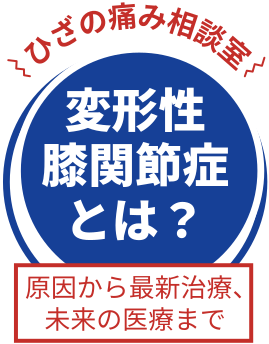

「ひざの痛み」の原因や
治療法について
学んでみ
ませんか？
痛みの原因、ご自身でできるケア、ヒアルロン酸注射などの治療法について専門医がやさしく解説します。よりよい治療選択のためのヒントが見つかりますように。
さらに、治療体験談も患者さんからお話しいただきます。治療を受けた感想だけでなく、臨床研究の結果をどう活かすか、患者さんにとって役立つデータの使い方についても一緒に考えてみたいと思います。
本講座は10月5日（全国どこでもご参加いただけるLIVE配信と東京会場）と
10月19日（大阪会場）の2回開催予定です。多くのみなさまのご参加をお待ちしております。
- ※会場のお席には限りがございますため、お早めにお申し込みください。
- ※お申し込み締め切り日は、LIVE配信、東京会場、大阪会場で異なりますのでご注意ください。
- ※会場のお席には限りがございますため、お早めにお申し込みください。
- ※お申し込み締め切り日は、LIVE配信、東京会場、大阪会場で異なりますのでご注意ください。
専門医が教えます！
「ひざの痛み
（変形性膝関節症）の
最新知識」
講演内容
あなたの膝は大丈夫？
変形性膝関節症の基礎知識
手術だけじゃない！
治療の選択肢
より良い治療を未来へつなぐ「臨床研究」の役割
佐藤正人先生
いっしょに考えよう！
「私の治療体験談」
- 変形性膝関節症患者さん（1名）
- 質疑応答
佐藤正人先生、患者さん
専門医がみなさまからお寄せいただいた質問にお答えします。事前申込の際に質問を受け付けておりますので、ぜひこの機会にご質問ください。
当日のご質問も可能ですが、時間に限りがございます。また、治療法についてのご質問等、内容によりお答えできない場合もございますので予めご了承ください。
本講座は、現在実施中の変形性膝関節症に関する臨床研究の一環として開催されるものです。
講座内では、研究の目的や進捗状況についてご説明いたします。
注意事項
- 電話、はがき、メールでのお申し込みは受け付けておりません。
- 本セミナーは事前申し込みいただいた方のみご参加いただけます。
- 参加費無料ですが、 LIVE配信の視聴にはご本人負担で通信料がかかります。あらかじめご了承ください。
- LIVE配信はパソコン、スマートフォン、タブレット端末でご視聴いただけます。移動中や電波の入りにくい場所では画面や音声が途切れたり、見られなくなる場合がありますので、通信環境のよい場所でのご視聴をおすすめします。
- LIVE配信・東京会場お申し込みの場合、お申し込みいただいたメールアドレス宛に、開催前（1週間前、前日）に視聴URLなどのご案内をメールでお送りします。@kidea.jpからのメールを受信できるよう設定をお願いします。
- 大阪会場での参加をご希望いただく場合、申込み時に電話番号をお伺いします。後日0120-549-726から確認のお電話をいたします。着信拒否の設定をされていましたら本番号の設定を解除してください。開催日が近づきましたら0120-963-787の番号からリマインドのためショートメッセージをお送りする予定です。
- 事前のご案内が届かない場合は、地図下の事務局までお問い合わせください。
10月5日 東京会場
LIVE配信もあります！
- 会場：ベルサール八重洲 RoomA+B+C
- 定員：200名
- 所在地：〒103-0028
東京都中央区八重洲1-3-7 八重洲ファーストフィナンシャルビル 2F -
電車をご利用の場合
- 東西線・銀座線・浅草線「日本橋駅」A7出口直結
- 丸ノ内線・東西線・千代田線・半蔵門線・三田線「大手町駅」B10出口徒歩2分
- 半蔵門線・銀座線「三越前駅」B3出口徒歩3分
- JR「東京駅」八重洲北口徒歩4分
お問い合わせ
市民公開講座に関する
お問い合わせ
株式会社QLife
ひざの痛み相談室
市民公開講座事務局
参加登録システムに関する
お問い合わせ（東京・LIVE配信）
木村情報技術株式会社/
サポート窓口
（土・日・祝日を除く9:00-18:00）
-
お問い合わせフォーム：
https://gjm.pw/form※当日は、講座終了時間までサポートいたします。
木村情報プライバシーポリシー
10月19日 大阪会場
- 会場：AP 大阪駅前 AP ホール
- 定員：200名
- 所在地：〒530-0001
大阪府大阪市北区梅田 1-12-12
東京建物梅田ビル B2F -
電車をご利用の場合
- JR「大阪駅」
中央南口徒歩2分 - JR 東西線
「北新地駅」徒歩3分 - 地下鉄御堂筋線
「梅田駅」徒歩2分 - 四つ橋線
「西梅田駅」徒歩3分 - 谷町線
「東梅田駅」徒歩2分 - 阪急「大阪梅田駅」
徒歩5分 - 阪神「大阪梅田駅」
徒歩2分
- JR「大阪駅」
お問い合わせ
セミナー事務局（大阪）
生活向上WEB／
サポート窓口
（平日9:00-18:00／
土・祝日9:00-17:00）
- TEL：0120-549-726
- お問い合わせフォーム：
https://www.seikatsu-kojo.jp/inquiry/※当日は、講座終了時間までサポートいたします。
生活向上WEB
プライバシーポリシー
注意事項
- 電話、はがき、メールでのお申し込みは受け付けておりません。
- 本セミナーは事前申し込みいただいた方のみご参加いただけます。
- 参加費無料ですが、 LIVE配信の視聴にはご本人負担で通信料がかかります。あらかじめご了承ください。
- LIVE配信はパソコン、スマートフォン、タブレット端末でご視聴いただけます。移動中や電波の入りにくい場所では画面や音声が途切れたり、見られなくなる場合がありますので、通信環境のよい場所でのご視聴をおすすめします。
- LIVE配信・東京会場お申し込みの場合、お申し込みいただいたメールアドレス宛に、開催前（1週間前、前日）に視聴URLなどのご案内をメールでお送りします。@kidea.jpからのメールを受信できるよう設定をお願いします。
- 大阪会場での参加をご希望いただく場合、申込み時に電話番号をお伺いします。後日0120-549-726から確認のお電話をいたします。着信拒否の設定をされていましたら本番号の設定を解除してください。開催日が近づきましたら0120-963-787の番号からリマインドのためショートメッセージをお送りする予定です。
- 事前のご案内が届かない場合は、地図下の事務局までお問い合わせください。